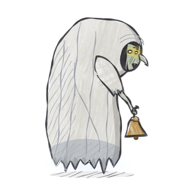
IKlekánice
Can only be hurt inside your lamplight.
Zranit ji můžeš jen ve světle kahanu.
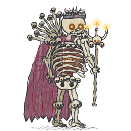
IKostník ze Sedlce
Forty thousand bones. He puts himself back together.
Čtyřicet tisíc kostí. Složí se znovu.
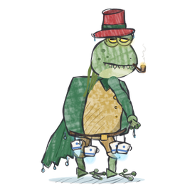
IVodník
Smash the teacups, free the souls, stop his healing.
Rozbij hrníčky, osvoboď dušičky, zastav jeho léčení.
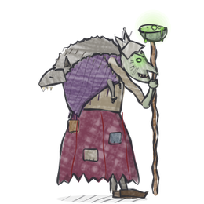
IIMegera
The witch of Brdy, hopping between cauldrons.
Brdská čarodějnice, skáče mezi kotli.
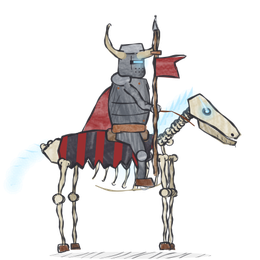
IIDivoký Prokop
Charges on a skeleton horse. Make him hit the wall.
Řítí se na kostlivém koni. Ať narazí do zdi.
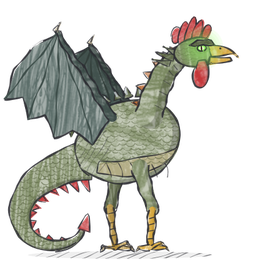
IIBazilišek
His gaze turns you to stone. Hide, or use a mirror.
Jeho pohled zkamení. Schovej se, nebo vezmi zrcadlo.
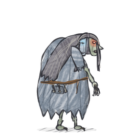
IIIStrzyga
Two hearts, two souls, two deaths.
Dvě srdce, dvě duše, dvě smrti.
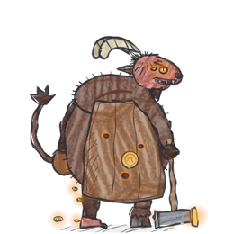
IIIMincíř Ohnivec
Throws burning thalers. Some gold piles bite.
Hází hořící tolary. Některé hromádky zlata koušou.
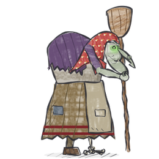
IIIJežibaba
Her hut walks and kicks. Keep the oven cold.
Chaloupka chodí a kope. Nedej peci rozpálit se.
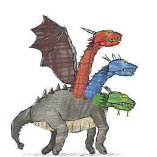
IVSaň Tříhlavá
Cut off a head, then burn the stump.
Usekni hlavu a vypal pahýl.
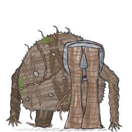
IVVij
“Lift my eyelids!” Don't let them.
„Zvedněte mi víčka!“ Nedovol jim to.
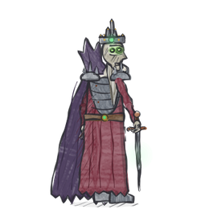
IVKostěj Nesmrtelný
The needle, in the egg, in the duck, in the hare…
Jehla ve vejci, vejce v kachně, kachna v zajíci…